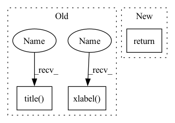

Pattern ID :5167

Before Change
plt.xticks(x+group_width/2.0, group_name)
plt.legend()
plt.xlabel(xlabel)
plt.ylabel(plot_obj["y"])
title = self.task if "title" not in plot_obj.keys() else plot_obj["title"]
plt.title(title)
return
def scatter(self, plot_obj):
pos_key = plot_obj["position"]
After Change
plt.xticks(x+group_width/2.0, group_name)
plt.legend()
plt.ylabel(plot_obj["y"])
return
def scatter(self, plot_obj):
pos_key = plot_obj["position"]
// color = plot_obj["color"] if "color" in plot_obj.keys() else "r"
In pattern: SUPERPATTERN
Frequency: 4
Non-data size: 3
Instances
Fragment ID: 18323028
Project Name: wwzzz/easyfl
Commit Name: 70f88dd6f0e839de1335b0346f96dbff91a5b5b5
Time: 2022-07-29
Author: zzz510711928@gmail.com
File Name: utils/result_analysis.py
M Class Name: Drawer
N Class Name: Drawer
M Method Name: bar(2)
N Method Name: bar(2)
M Parent Class: Analyser
N Parent Class: Analyser
M File Name: utils/result_analysis.py
N File Name: utils/result_analysis.py
M Start Line: 347
M End Line: 351
N Start Line: 359
N End Line: 359
'>
Before Change
max_val = statistic_on_dicts(rec_dicts, name="max", key=plot_obj["y"])
mean_val = statistic_on_dicts(rec_dicts, name="mean", key=plot_obj["y"])
draw_curve_with_range(x, mean_val, min_val, max_val, legend=rec_dicts[0]["legend"], color=self.colors[id])
plt.xlabel(plot_obj["x"])
plt.ylabel(plot_obj["y"])
title = self.task if "title" not in plot_obj.keys() else plot_obj["title"]
plt.title(title)
plt.tight_layout()
return
def trace_2d(self, plot_obj, strong_end = True):
After Change
ax.legend()
// draw_curve_with_range(x, mean_val, min_val, max_val, legend=rec_dicts[0]["legend"], color=self.colors[id], ax=ax)
plt.tight_layout()
return
def trace_2d(self, plot_obj, strong_end = True):
// plot trace
default_size = 1
'>
Fragment ID: 18323027
Project Name: wwzzz/easyfl
Commit Name: 76492d038ba28d59ae72b442e2c9783ca7e33c6f
Time: 2022-07-27
Author: zzz510711928@gmail.com
File Name: utils/result_analysis.py
M Class Name: Drawer
N Class Name: Drawer
M Method Name: group_plot(2)
N Method Name: group_plot(2)
M Parent Class: Analyser
N Parent Class: Analyser
M File Name: utils/result_analysis.py
N File Name: utils/result_analysis.py
M Start Line: 223
M End Line: 232
N Start Line: 264
N End Line: 276
'>
Before Change
plt.plot(x, y, label=dict["legend"], linewidth=1, c=self.colors[id])
max_x = x[-1] if x[-1] > max_x else max_x
plt.legend()
plt.xlabel(plot_obj["x"])
plt.ylabel(plot_obj["y"])
title = self.task if "title" not in plot_obj.keys() else plot_obj["title"]
plt.title(title)
plt.tight_layout()
return
def group_plot(self, plot_obj):
After Change
max_x = x[-1] if x[-1] > max_x else max_x
plt.legend()
plt.tight_layout()
return
def group_plot(self, plot_obj):
for id, item in enumerate(self.grouped_records.items()):
ax = self.get_current_axes(plot_obj, id)
'>
Fragment ID: 18323026
Project Name: wwzzz/easyfl
Commit Name: 76492d038ba28d59ae72b442e2c9783ca7e33c6f
Time: 2022-07-27
Author: zzz510711928@gmail.com
File Name: utils/result_analysis.py
M Class Name: Drawer
N Class Name: Drawer
M Method Name: plot(2)
N Method Name: plot(2)
M Parent Class: Analyser
N Parent Class: Analyser
M File Name: utils/result_analysis.py
N File Name: utils/result_analysis.py
M Start Line: 209
M End Line: 217
N Start Line: 252
N End Line: 261
'>
Before Change
if len(xlabels) < 30:
axis.set_xticklabels(xlabels, rotation=90)
plt.xlabel(kwargs.get("xlabel", "inputs"))
plt.colorbar(im)
plt.title(label)
self.save_or_show(save, fname, where=where, show=show)
return
After Change
plt.colorbar(im)
self.save_or_show(save, fname, where=where, show=show)
return
def plot1d(self, array, label: str = "", show=False, fname=None, rnn_args=None, where=""):
plt.close("all")
plt.plot(array)
'>
Fragment ID: 18323025
Project Name: atrcheema/ai4water
Commit Name: 615b9f8929fb2a58e62b145e6b3c642f657ab26a
Time: 2021-11-20
Author: sara.rwpk@gmail.com
File Name: ai4water/utils/plotting_tools.py
M Class Name: Plots
N Class Name: Plots
M Method Name: _imshow(10)
N Method Name: _imshow(10)
M Parent Class: object
N Parent Class: object
M File Name: ai4water/utils/plotting_tools.py
N File Name: ai4water/utils/plotting_tools.py
M Start Line: 102
M End Line: 130
N Start Line: 102
N End Line: 127